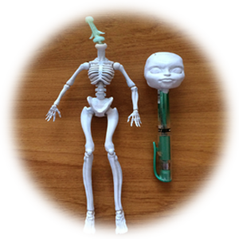
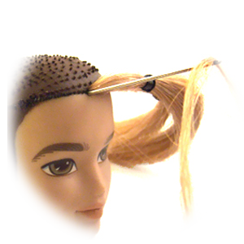
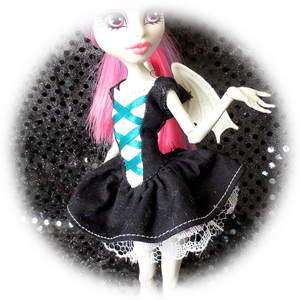

DOLLS DOLLS DOLLS
a childhood obsession...


OOAK dolls, standing for "one of a kind," are special dolls that are usually made or modified by hand. Creators across the world OOAK-ify their toys by cutting, dying, dismembering, painting, sculpting, and reconstructing. Whether they're a professional artist or a heavy-handed two-year-old, OOAK dolls allow people to open their hearts to nostalgia, fantasy, and endless creativity.

Monster High
Monster High is one of the most popular dolls in the customization community. They offer unique skin tones, large eye surface for drawing, and an impressive variety of face molds.

Ever After High
Ever After High is another popular doll line in the community and is easily distinguishable by their cute, rounded heads.

Barbie
Because Barbies are hugely popular and still sold in stores, they're the easiest to find secondhand. Though their features are smaller and more realistic, their predominant sculpting make them great for beginner repaints.

Bratz
Known for their large heads and exaggerated features, Bratz are perfect for expressive OOAK projects.

BJDs and Smart Dolls
There are many online shops that sell larger BJDs (ball jointed dolls) specifically for people to customize. Usually, these larger dolls have greater articulation and holes in their heads for glass inset eyes. For a doll line like Smart Dolls, you can select their skintone, hair, and clothes directly from these stores or customize them yourself.

Licca
The Japanese Licca-chan doll line from Takara Tommy is relatively obscure in the U.S., but is my personal favorite.

Step 1: Doll selection and prep
I recommend buying secondhand dolls to cut costs and save toys from the landfill. You can easily find Barbies at any local thrift store. For Monster High and Ever After High dolls (which are popular bases in the custom doll community), you can find reasonably priced lots on online sites like Ebay. Wash your doll using soap and warm water. If you do not want the doll's original hair, cut it off. If you are using a standard, plastic modern doll, you can tug off the doll's head and use needle nose pliers to remove the rest of the hair stubble from inside the doll's head. Then use q-tips soaked in acetone to wipe off the original face paint. Clean again with warm water. Finally, spray the head with Mr. Super Clear in a ventilated space to prep your drawing surface.

Step 2: Face/body repaint
Use water color pencil, chalk pastels, acrylic paint, or a combination of all three to draw on the doll's face. For each layer you want to seal, spray the head with Mr. Super Clear. You can glue false lashes, gemstones, and other details directly to the face. Once complete, spray with Mr. Super Clear.

Step 3: Hair
There are multiple approaches to changing your doll's hair. The easiest option is to keep the original hair and style or dye it. However, for a brand-new look, wigs or hair reroots are the most popular options. For wigs, you can find ready-made doll wigs for purchase online or create your own from yarn or synthetic hair. The alternative, rerooting, involves poking individual hairs into the doll's head, similar to most modern doll's manufacturing processes. Rerooting generally allows for greater precision and customization. You can also forgo these processes and simply sculpt your doll's hair out of materials such as clay, which works great for fantastical hair styles.

Step 4: Clothes & accesories
There are many online patterns available for sewing custom doll clothes and accessories. Alternatively, you can create your own sewing patterns by ripping apart old doll clothes and tracing the pieces on paper. If sewing is daunting to you, you can also customize your existing doll clothes with ribbons, lace, buttons, and more. Experiment with your designs until your doll shines!
MY FAVORITE CREATORS...
click on images to find their YouTube!